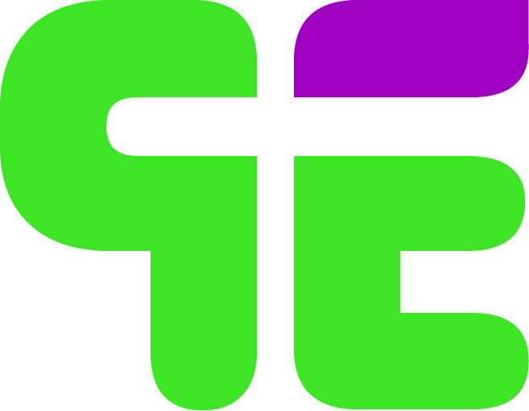
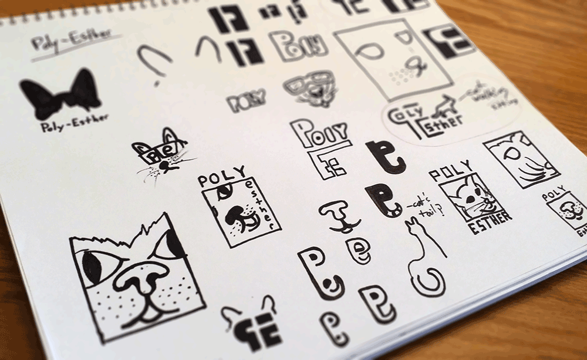
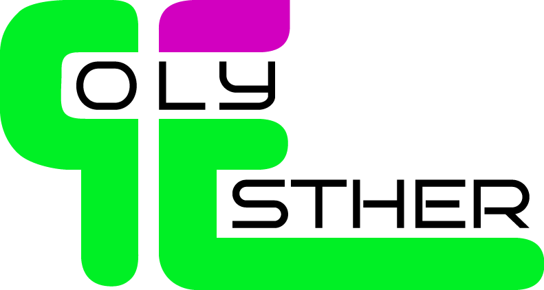

Poly-Esther
Vibrant DJ Poly-Esther - known to deliver vivaciously voracious, block dropping, face melting bass - was in need of a logo
Requirements:
big, fun, colorful and bubbly but with an edge... include cats if possible?
Roughs
Naturally the optional cat requirement dominated the early stages of the creative process
Digi Roughs
Final
Incorporating Poly's name into the logo was crucial as exposure is important to the success of any artist
Poly can now showcase her style and personality before her bass even slaps you in the face
Listen to Poly-Esther here